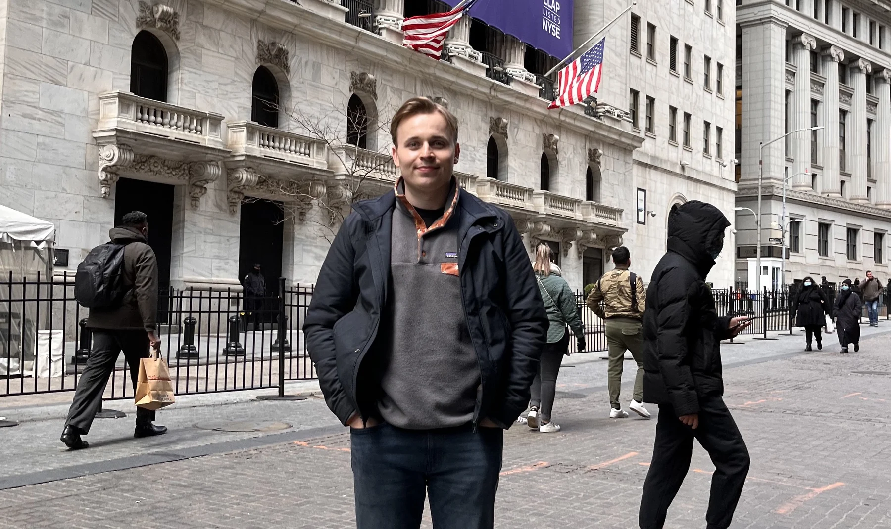
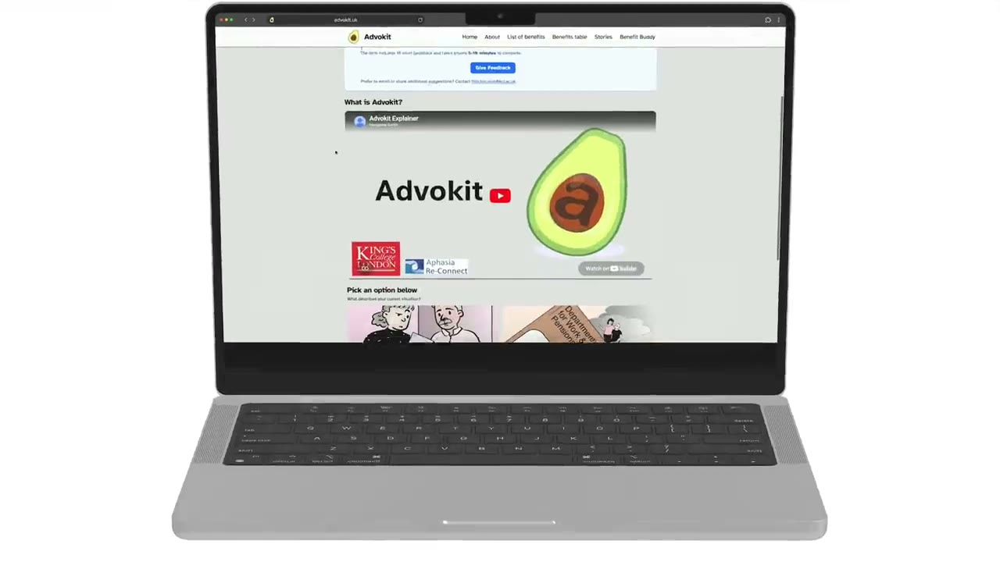
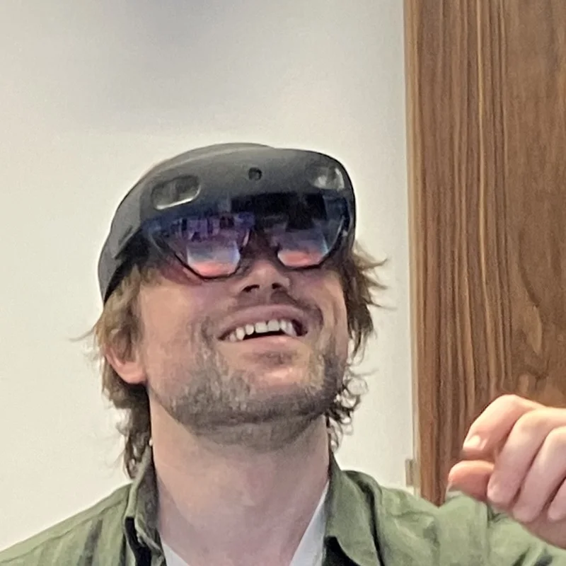
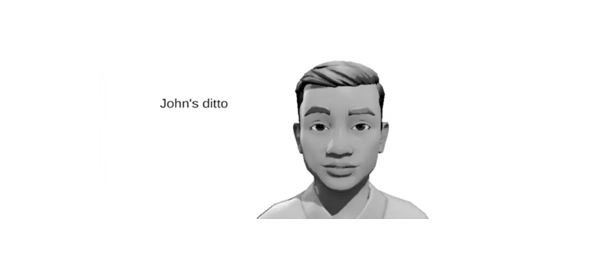

I joined King's College London as a Research Associate. I am developing Advokit, an inclusive GenAI toolkit co-designed with people with aphasia, and open-sourcing my wider portfolio of accessible technologies.

Hi there 👋. I am a Research Associate at King’s College London, working across human-computer interaction, accessibility and artificial intelligence. I design, build and evaluate human-centred AI systems—including wearable and screenless interfaces—for health, accessibility and public services. Drawing on participatory design, software development and mixed-methods evaluation, I develop new ways for people to communicate, navigate services and work with AI.
I completed my PhD in the Human-Centred Computing Research Group, supervised by Dr Timothy Neate and Dr Rita Borgo, where I co-designed wearable AAC with people with aphasia. Previously, I interned with the Ability Team at Microsoft Research under Dr Martez Mott, designing and evaluating LLM-powered meeting agents for chronically ill people. I now develop Advokit, an inclusive GenAI toolkit co-designed with people with aphasia to support access to public services.
Outside research, I enjoy golf, reading, film and travel. I spend plenty of time walking my family’s three dogs and remain a long-suffering Manchester United supporter.
I interned with the Ability Team at Microsoft Research, working with Dr Martez Mott and colleagues on remote meeting agents for chronically ill people.
My PhD in Computer Science in King's Human-Centred Computing Research Group explored wearable and discreet AAC with people with aphasia, supervised by Dr Timothy Neate and Dr Rita Borgo. See the research and publications.
I completed an MSc in Advanced Computing at King's, receiving the MSc Academic Prize. Projects included Argupedia, supervised by Dr Sanjay Modgil, and an interactive COVID-19 vaccination visualisation.
I graduated from the University of Bristol with an MSc in Computer Science with Merit. My dissertation, supervised by Dr Paul O'Dowd, produced the Turrellian LED Lamp.
I spent a year abroad at Sciences Po Grenoble, studying political science in French and learning to navigate a different academic and cultural system. Read the reflective essay and student guide.
I studied Philosophy, Politics and Economics at the University of Exeter, graduating with First-Class Honours. Supervised by Thomas Sisk, my undergraduate dissertation examined high-frequency trading, market efficiency and MiFID II.
Selected Projects

AI for Public Services
Advokit
Digital welfare services exclude many people with aphasia. As a Research Associate, I built and deployed Advokit, a schema-driven GenAI toolkit with LLM drafting and safety monitoring. A three-month deployment reached 800 visitors and 2,849 page views, exposed LLM failures and informed its text-box-free redesign and eventual UK-wide Stroke Association adoption.
Discreet Communication Supports
Wearable and Screenless AAC
Conventional AAC can interrupt conversation and draw unwanted attention. Across four years of PhD co-design with 200+ stroke survivors, therapists and clinicians, I built smartwatch, e-ink badge, mixed-reality smartglasses and hearable AAC systems, including on-device ML. The research identified the most viable form factors, earned publication awards and contributed to a £2m UKRI Future Leaders Fellowship.
Human–AI Interaction
AI Meeting Agents for Video Calls
Video calls can intensify fatigue, brain fog and pain for chronically ill people. During my Microsoft Research internship, I led an N=55 survey and used Ditto to co-design LLM-powered meeting agents. The research produced eight design recommendations and a first-authored CHI 2025 paper.Featured Publications
-
Prompting Change in the Welfare State: Co-designing an LLM-Assisted Toolkit of Welfare Stories and Tips with Aphasia CommunitiesSocial Impact Award — ASSETS 2026
- Envisioning the (In)Visibility of Discreet and Wearable AAC DevicesBest Paper — CHI 2023
- Watch Your Language: Using Smartwatches to Support CommunicationBest Student Paper — ASSETS 2023
- Looking Past Screens: Exploring Mixed Reality and Discreet AAC DevicesBest Paper Nomination — ASSETS 2024